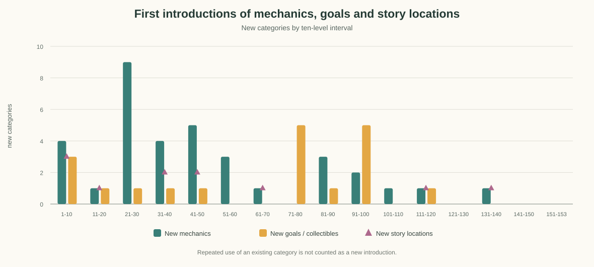

В текущей игре Сфера — сюжетный предмет горной линии, виден в сценах уровня 71 (реплики r71–r75). В активном списке клеточных бустеров отдельной Сферы нет: на поле уже работают компас, три уровня ракет и зрение. Ниже — варианты, если Сферу нужно превратить из декора или сюжетного объекта в разовый внутриуровневый инструмент.
Рекомендация: «Импульс резонанса»
Игрок выбирает открытую клетку и выпускает из Сферы мягкую волну. Она открывает до трёх соседних доступных клеток (из шести), но не снимает лиану, лёд, доски или другой замок; закрытые препятствия остаются в поле и требуют обычного решения. Клетки выбираются детерминированно по продвижению к целям, при равенстве — по фиксированному порядку направления.
Так Сфера даёт ощутимый эффект, помогает распутать участок и сохраняет решение за игроком. Она отличается от компаса (цепочка конкретных клеток), зрения (подсветка направлений и целей) и ракеты (широкое мгновенное открытие). При наличии менее трёх доступных соседей открывается только доступное число.
Ограничитель: одна активация — один запуск волны; каждое открытие всё равно подчиняется правилам уровня и корректно обновляет цели, мёд и счётчики. Не создавать клетки за границей поля и не обходить укрытия. Первый показ — одна бесплатная Сфера на обучающем уровне, дальше только редкая награда, чтобы не вытеснить стандартные бустеры.
Другие рабочие варианты
Идея
Действие
Плюсы
Риск
Сфера предчувствия
На несколько секунд отмечает безопасную последовательность из 2–3 ближайших клеток к цели
Легко объяснить; подходит мотиву сфер
Пересекается со зрением и может стать только подсказкой
Сфера разлома
На выбранной клетке снимает один слой лианы или льда
Сильная помощь на заблокированном поле
Стирает ценность системы препятствий; нужно ограничить типы покрытий
Кристальный обмен
Меняет местами две соседние открытые клетки вместе с содержимым
Даёт тактический выбор без прямого открытия
Похоже на «перчатку» и сложнее для мобильного ввода
Волна рассеивания
Открывает один выбранный объект и до двух клеток в линии за ним
Чёткая направленность, эффектный луч
Похожа на компактную ракету
Решение для прототипа
Начать с «Импульса резонанса»: он лучше всего продолжает образ Сферы как источника волны, а ограничение соседними доступными клетками сохраняет различия с существующими компасом и зрением. Перед балансировкой сравнить среднее число открытий на активацию, экономию ходов и долю случаев, когда эффект открывает целевой предмет.
В ForestConfiguration задано 153 последовательных уровня, 1–153. Введение правил сгущается на уровнях 21–50, затем редеет: в диапазоне 71–80 не появляется нового типа механики, а в 141–153 не появляется ни нового типа механики, ни новой цели или находки. Новые предметы ненадолго возвращаются на 91–100; это поддерживает разнообразие целей, но не заменяет новых способов взаимодействия.
Сюжетные сцены сгущены в начале: после чердака на уровне 64 следующая впервые встречающаяся отдельная локация — лагерь на 111-м (47 уровней), затем цветочные поля на 134-м (23 уровня). Это самое заметное окно для добавления новой локации или крупного сюжетного набора.
График

Данные по диапазонам
Уровни
Новые типы механик
Новые типы целей / находок
Новые сюжетные локации
1–10
4
3
3
11–20
1
1
1
21–30
9
1
0
31–40
4
1
2
41–50
5
1
2
51–60
3
0
0
61–70
1
0
1
71–80
0
5
0
81–90
3
1
0
91–100
2
5
0
101–110
1
0
0
111–120
1
1
1
121–130
0
0
0
131–140
1
0
1
141–150
0
0
0
151–153
0
0
0
Сюжетные и предметные вехи
Отдельные сюжетные локации впервые появляются на уровнях: 2 — дом и сундук; 3 — открытый сундук; 14 — котёл; 32 — тёмный лес; 37 — встреча с единорогом; 44 — лес; 47 — костёр; 64 — чердак; 111 — лагерь; 134 — цветочные поля.
Первые появления целей и находок также становятся реже и затем идут отдельными всплесками: стартовые грибы — уровни 1–7; водяная лилия и лаванда — 15 и 22; аманита — 33; полено — 47; новые ягодные и грибные цели — 74–100; янтарь — 116. После 116-го уровня в конфигурации не появляется нового имени цели.
Интерпретация и следующие шаги
Уровни 21–30 дают максимальный скачок: 9 новых типов механик. Следующие два диапазона 31–50 удерживают темп, поэтому здесь удобно учить игрока короткими сериями с возрастающей нагрузкой.
Уровни 51–70 спокойнее. Уровни 71–80 полностью без новой механики, хотя вводят пять новых типов целей; это похоже на контентный, а не системный апдейт.
Уровни 81–100 содержат пять новых типов механик и шесть новых целей суммарно — заметный всплеск после паузы. Стоит проверить, есть ли для каждой новой цели вводный и закрепляющий уровень.
На 101–153 правила почти не пополняются: всего три типа механик, одна новая цель и две новые локации по первым появлениям. Для длинного хвоста это риск однообразия, даже если меняются карты и числа.
Планировать следующую длинную дугу лучше парами: сначала показать новую механику в безопасной раскладке, затем соединить её со знакомыми механиками; крупную смену локации ставить перед такой дугой и подкреплять новым визуальным объектом или сюжетным действием.
Метод и ограничения
Источник — порядок записей ForestConfiguration.allForests и первые location в ReplicasConfiguration.allReplicas. «Новая механика» здесь означает первое появление специального символа маски или флага/счётчика уровня; «новая цель» — первое имя из items или interactiveItems; локация учитывается при первом сюжетном контексте реплики. Повторное сочетание механик, повышение сложности, новая раскладка поля и повторные сюжетные сцены не считаются новизной. График измеряет частоту введения категорий по исходникам, а не художественную оригинальность или субъективную сложность.
Данные можно пересчитать командой node tools/analyze-level-progression.js.